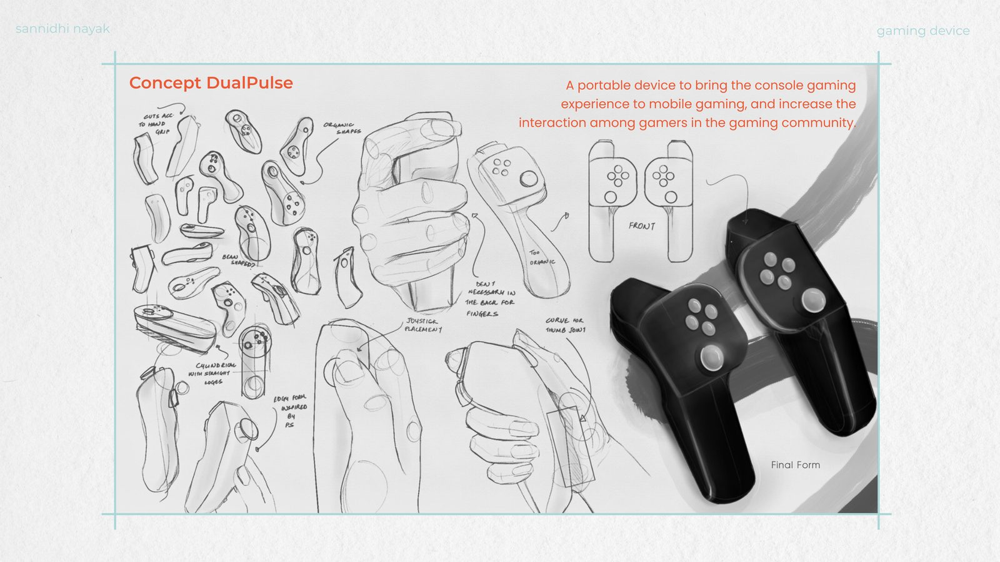
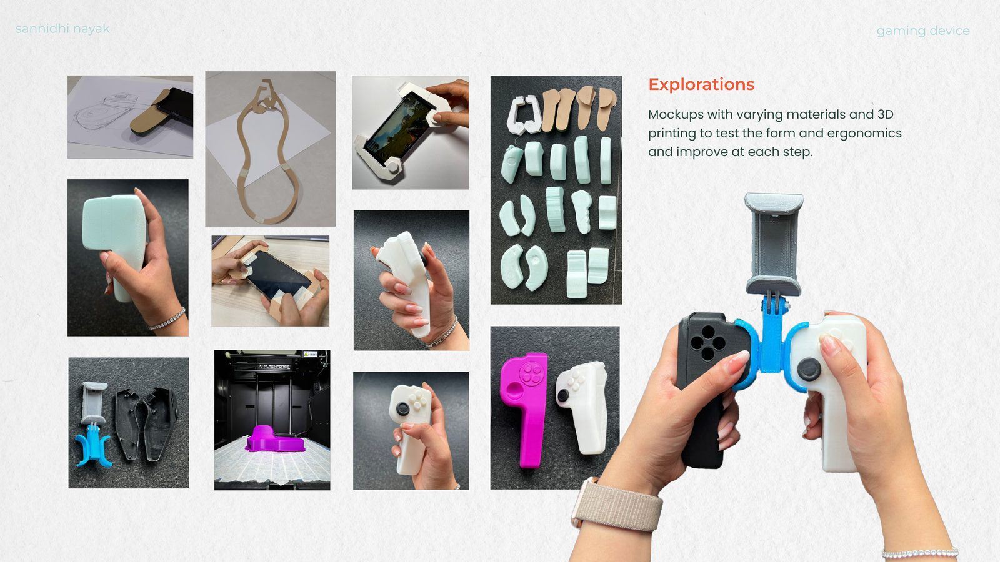
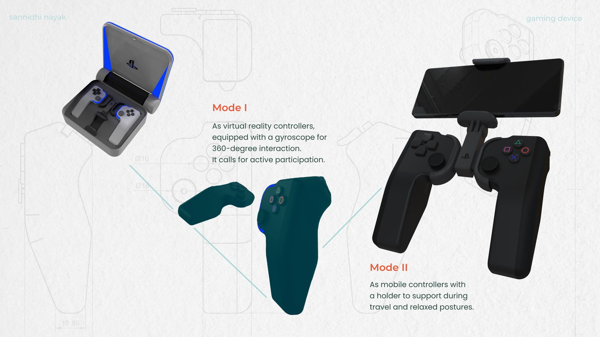

Product Design · Gaming
A concept exploring what a Sony PlayStation mobile gaming device could look like, and why Sony might invest in one.

The Brief
The 2020 pandemic saw a sharp rise in mobile gaming. We saw an opportunity to give mobile gamers a console-quality experience — studying Sony’s ethos and product portfolio to predict a new product line that fit both the market and the brand.
Getting Inspired
Ideation focused on human behavior — how people interact with daily objects — before moving into hand studies, grip explorations, and iterative sketching to find a form that felt natural in the hand.

The Concept
A portable device bringing console-quality gaming to mobile, and increasing interaction among gamers in the community.

Back to the beginning